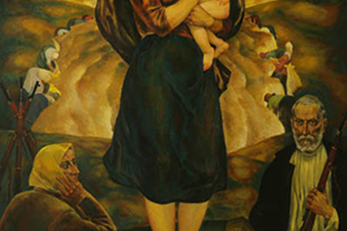

Хата, корова, фэшн: съемку из деревни Глубокое напечатали в нью-йоркском глянце
ИнтервьюПрикоснуться к Бэнкси. Беларуска, которая попала в «Топ-100 лучших художников мира»
За спиной – «художка» и колледж. в руках – охапка кистей и тюбики с краской. какие
перспективы
могут ожидать юных живописцев, через что придется пройти,
чтобы засветиться и
жить не
«взаймы»?
Валерий Песин: “Отношусь к рисованию, как к своего рода поручению”
Триеннале «Концепт» во Дворце искусства
Международный фестиваль перформативного искусства «Перформенск»
Фестиваль искусства «Арт-Минск-2021»
Международный фестиваль перформативного искусства «Перформенск»
Видео на Mart.BY
"Вдохновение напало"
Анна Силивончик
3:15
SEASONS
2:35
Acrylic painting tulip flowers
8:05
Sunflower painting
8:05
ART
«Художник рисует красками,
провокатор – судьбами людей»
Человек с мышлением художника
– редкость. Тем приятнее100 лучших
художников
мира»
Хата, корова, фэшн: съемку из
деревни Глубокое напечатали в
нью-йоркском
глянце
Во Дворце искусства открылись
сразу четыре выставки Месяц
фотографии в
Минске
2020
Выставка художника-графика
Андрея Басалыги
«Антология».Трыенале
сучаснага
мастацтва
Последние материлы
«Художник рисует красками, провокатор
– судьбами людей»
Человек с мышлением художника – редкость.
Тем приятнее100 лучших
художников
мира»
«Художник рисует красками, провокатор –
судьбами людей»
Человек с мышлением художника – редкость.
Тем приятнее100 лучших
художников
мира»
«Художник рисует красками, провокатор –
судьбами людей»
Человек с мышлением художника – редкость.
Тем приятнее100 лучших
художников
мира»
Игорь Тишин: мультимедийный проект
«Тихое партизанское движение», 1997
Таня Артимович подготовила эссе по
мультимедийному проекту Игоря Тишина
«Тихое
партизанское движение» 1997 года и
проанализировала, как изменилось
видение
партизанского движения в белорусском
искусстве. Статья публикуется на
белорусском
языке.
Места
Валерий Песин: “Отношусь к
рисованию, как к
своего рода поручению”
I Триеннале «Концепт» во Дворце
искусства
Международный фестиваль
перформативного искусства
«Перформенск»
Интервью
Валерий Песин: “Отношусь к
рисованию, как к
своего рода поручению”
I Триеннале «Концепт» во Дворце
искусства
Международный фестиваль
перформативного искусства
«Перформенск»
Мнения
Валерий Песин: “Отношусь к
рисованию, как к
своего рода поручению”
I Триеннале «Концепт» во Дворце
искусства
Международный фестиваль
перформативного искусства
«Перформенск»
Новости
Валерий Песин: “Отношусь к
рисованию, как к
своего рода поручению”
I Триеннале «Концепт» во Дворце
искусства
Международный фестиваль
перформативного искусства
«Перформенск»
Персоны
Валерий Песин: “Отношусь к
рисованию, как к
своего рода поручению”
I Триеннале «Концепт» во Дворце
искусства
Международный фестиваль
перформативного искусства
«Перформенск»
События
Валерий Песин: “Отношусь к
рисованию, как к
своего рода поручению”
I Триеннале «Концепт» во Дворце
искусства
Международный фестиваль
перформативного искусства
«Перформенск»